Seven Perspectives on Free Energy
Ah, free energy: the eternally confusing concept that lies at the heart of thermodynamics and statistical mechanics.
After so many years, I still find it remarkably difficult to properly interepret the free energy of a system, because there's so many different ways to define it and think about it. Each time you encounter the free energy, you have to cope with a different and often unrelated viewpoint. And then at the end of the day, once you've collected a bunch of diverse grab-bag perspectives, you have to somehow consolidate and reconcile them together into a coherent understanding.
Sometimes I wish there were one definition of The Free Energy, but the more and more I read about it, the less and less I believe in any unified understanding. At its core, free energy is a multi-faced beast.
Typically, we first encounter this confusing creature in high school chemistry class, when we learn about what makes reactions ‘‘go’’ – but as we continue through our educational journey, the unweildy animal pops its head at us again and again in unexpected places – in the biophysics of molecular motors, in the thermodynamics of steam engines, in discussions of protein folding, in the modern statistical mechanical theory, here, there, everywhere. What lies in common among all these definitions of free energy? What understanding can we glean from each of the interpretations? And how do they help build towards a cohesive understanding of free energy?
I don't have an answer to these questions. Nevertheless, I find it enlightening to bring together multiple perspectives towards free energy in one same place – mostly to soothe my own cognitive dissonance towards the whole confusing affair.
Here, I present to you: Seven Perspectives on Free Energy.
Spontaneity – qualitative explanations suffice in high school chem class.
Total Entropy – the driving force of the universe knocks at the door.
Yin and Yang – entropic bliss tangos with energetic reward in an eternal struggle.
Optimization – the internal energy is Legendre Transform'd when temperature is constrained.
Multiplicity – a redefined energy emerges when multiple states are occupied.
Derivatives – a magical connection is revealed between statistical mechanics and thermodynamics
Reaction Coordinates – an effective potential is born when we integrate over uninteresting degrees of freedom.
Spontaneity
We begin our journey with a qualitative explanation from high school chemistry class: the free energy tells you whether matter wants to transform. Leave iron in the rain and it becomes rust; put water in a freezer and it becomes ice; put water in an oven and it becomes steam. In all these chemical reactions, matter begins in one form and ends in another, and the driving force behind all such transformations is a decrease in free energy.
We can figure out whether chemical reactions proceed by comparing the free energy of their reactants and products. If a reaction results in a free energy that's smaller than what you started out with, then the transformation occurs. Typically, we define 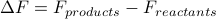 to quantify how much the free energy changes due to a chemical reaction; if it's negative (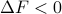) then we know the reaction occurs spontaneously because 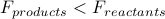. Conversely, if the free energy increases over the course of a reaction (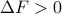), then it can't happen spontaneously.
This simple rule reveals some interesting physics:
We've implicitly assumed that we can define a unique free energy 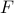 that captures everything we need to know about a chunk of matter. This rather deep assumption implies that the details of individual atoms don't matter when we're talking about large-scale chemical transformations. In the parlance of thermodynamics, we've assumed that the macroscopic coordinates determine a unique equilibrium state. We'll discuss this point in more depth later.
We've also taken for granted that the doesn't depend on how you enact a chemical transformation. The free energy change 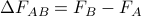 is the same regardless of if we perform 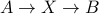 or 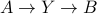. Since only depends on the free energy of the initial and final states, we're claiming that is a path-independent state function.
Finally, we see that only the differences in free energy are physically relevant. We could add a constant energy offset 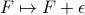 to the definition of free energy, but the change in free energy between states wouldn't change because 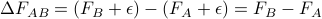 stays the same. The absolute values of free energy 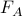 don't seem to play a role in the theory; only the changes tell you whether chemical reactions proceed.
The timescale question
Notice that our description of chemical reactions also has no mention of how long it takes for the transformation to occur. Indeed, the biggest caveat of thermodynamics is that it assumes you've waited an infinite amount of time for things to happen!
In reality, just because doesn't necessarily mean that a transformation will occur in experiments. All it says is that if you wait for infinitely long, then the transformation will ventually occur – but it doesn't tell you whether you have to wait milliseconds, or hours, or millenia, or the lifetime of the universe. Often the system must overcome an activation energy barrier to undergo a reaction; if it is too costly to ‘‘go over the hump’’ then the reaction might not actually occur over timescales we care about.
Here are a few instances where kinetics hinder a thermodynamically favored reaction (on human timescales):
Diamonds and Graphite. The classic example of metastability is that graphite has a lower free energy than diamond, yet diamond is stable and doesn't spontaneously turn into graphite on any reasonable timescale. If you take a look at the atomic structures of both allotropes of carbon, you see that there's absolutely no way for all the atoms in a diamond crystal to be unlucky enough to fluctuate into the form of graphite.
Supercooled water. If we cool water below 0 degrees C, it is supposed to freeze spontaneously because 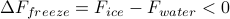. However, if the water sample is pure and the container is smooth, then the water can maintain its liquid state even below its freezing point. Without impurities for ice crystals to nucleate and grow from, there is no kinetic pathway along which the liquid state can become solid, even though the frozen form is technically a lower free energy state.
In summary, the statement that matter transforms into a state that minimizes its free energy is deceptively subtle. It is a simple rule, and yet it includes many assumptions and implications. We must keep these assumptions in mind whenever we do thermodynamics.
Entropy

 Back to my home page
Back to my home page